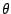
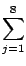
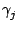
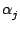
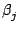
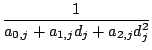
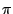
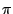
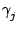

Επόμενο: 3Δ Γεωμετρία
Πάνω: Γεωμετρία και γραφικά
Προηγούμενο: 3Δ Αντικείμενα
Αν ενεργοποιήσουμε την εντολή Lights στο πλαίσιο που
ανοίγει πατώντας το κουμπί cfg ενός 3Δ γραφήματος,
το σκηνικό θα εμφανισθεί όπως ορίζεται από τον αλγόριθμο φωτισμού OpenGL.
(Περισσότερες πληροφορίες υπάρχουν στην ιστοσελίδα http://www.glprogramming.com/red/)
Μπορούμε να ενεργοποιήσουμε από 1 έως 8 προβολείς, όπου ο καθένας είναι
ρυθμίσιμος
(κουμπιά L0 έως L7 ή l1 έως l8).
Κάθε προβολέας έχει γεωμετρικές ιδιότητες: μπορεί να είναι προβολέας θέσης
αν w = 1 ή προβολέας κατεύθυνσης αν w = 0.
- Ένα προβολέας θέσης (w = 1) είναι
στη θέση x, y, z και έχει μια κατεύθυνση που ορίζεται από τις
συντεταγμένες
x->, y->, z->. Το φως που έρχεται από έναν προβολέα
θέσης μπορεί να εξασθενίσει (απόσβεση). Η
απόσβεση εξαρτάται απ την απόσταση μεταξύ
του προβολέα και του αντικειμένου (με εναν τετραγωνικό τύπο των μεταβλητων
att0, att1, att2 που βρίσκονται στην ρύθμιση του προβολέα), και από
το συνημίτονο της γωνίας μεταξύ της κατεύθυνσης του προβολέα
και του τμήματος προβολέα-αντικειμένου
σε κάποιον εκθέτη (exp στην ρύθμιση του προβολέα). Βλέπε και τον τύπο
παρακάτω στην σελίδα αυτή.
Επιπλέον, ο προβολέας μπορεί να φωτίζει μόνο εντός ενός κώνου, η γωνία του
οποίου ρυθμίζεται
από την μεταβλητή cutoff (σε μοίρες, μεταξύ 0 και 90.
Για να φωτίζει παντού, χρησιμοποιούμε 180).
Μια επιπλέον απόσβεση
προέρχεται από το συνημίτονο της γωνίας εισερχόμενης κατεύθυνσης-κάθετου
στο αντικείμενο, ούτως ώστε ο ζενιθιακός φωτισμός να είναι μέγιστος.
- Ένας προβολέας κατεύθυνσης (w = 0), που προσομοιώνει π.χ το ηλιακό φως,
δεν
έχει απόσβεση (εκτός απο την γωνία μεταξύ της κατεύθυνσης του προβολέα και
της καθέτου). Η κατεύθυνση ορίζεται από τα x, y, z.
Τα αντικείμενα στο σκηνικό ενδέχεται
να έχουν τις δικές τους ιδιότητες σχετικά με τρία είδη φωτός:
- φως περιβάλλοντος (ambient), το οποίο
προσομοιώνει φως που έρχεται από όλες τις κατευθύνσεις και διαχέεται προς
όλες τις κατευθύνσεις χωρίς απόσβεση,
- διάχυτο φως (diffuse), το οποίο
προσομοιώνει φως που έρχεται από μια κατέυθυνση και διαχέεται προς
όλες τις κατευθύνσεις
με έναν παράγοντα απόσβεσης ανάλογο προς το συνημίτονο της γωνίας μεταξύ
της εισερχόμενης κατεύθυνσης και της καθέτου προς το αντικείμενο,
- κατοπτρικό φως (specular), το οποίο
προσομοιώνει φως που έρχεται από μια κατέυθυνση και αντικατοπτρίζεται
επιλεκτικά προς την κατεύθυνση την συμμετρική ως προς την κάθετο στο αντικείμενο.
Επιπροσθέτως, ένα αντικείμενο μπορεί να έχει ενδογενές φως, που ονομάζεται
εκπομπή (emission).
Κάθε ιδιότητα πρέπει να ορίζεται για 4 κανάλια: r (red/κόκκινο), b (blue/μπλε)
και g (πράσινο/green) για τα χρώματα, και a (άλφα) για τη διαφάνεια (αν
ενεργοποιήσιυμε το Blending).
Οι ιδιότητες του αντικειμένου πρέπει να διευκρινιστούν κατά τον ορισμό τους (στη
γραμμή εντολών της "υποσυνεδρίας"). Έτσι για παράδειγμα η εντολή
gl_material=[gl_front,gl_ambient,[r,g,b,a]]
καθορίζει την ιδιότητα για το φως περιβάλλοντος. Στην εντολή αυτή χρησιμοποιούμε
gl_diffuse, gl_specular ή gl_emission
αντί για gl_ambient για διάχυτο, κατοπτρικό ή
φως εκπομπής. Οι προεπιλεγμένες τιμές είναι 0.2 για το φώς περιβάλλοντος,
0.8 για το διάχυτο
και 0 για το φως εκπομπής
στα κανάλια r,g,b και 1 στα κανάλια alpha.
gl_material=[gl_front,gl_shininess,n]
καθορίζει τον εκθέτη n που θα χρησιμοποιηθεί για το κατοπτρικό φως. Ο εκθέτης
είναι του
cos(), όπου είναι η γωνία
μεταξύ του ανακλούμενου εισερχόμενου φωτός και της διεύθυνσης οπτικοποίησης
(προεπιλεγμένη τιμή n = 50).
gl_texture="filename" ορίζει ένα όνομα αρχείου εικόνας
όπου θα απεικονισθεί σε μια σφαίρα ή ένα πολύγωνο ή μια παραμετρικά
ορισμένη επιφάνεια.
Συνοψίζοντας, έχουμε ότι ο τύπος για το φως σε κάθε κανάλι είναι :
| l |
= |
oe + oala, j + osls, jcos()S + |
|
| |
|
+ odld, jcos()ejcos() |
|
όπου :
-
oe, oa, od, os
είναι οι υλικές ιδιότητες σχετικά με το
περιβαλλοντικό, διάχυτο, και κατοπτρικό φως, S είναι η
"λαμπρότητα" (εκθέτης για κατοπτρικό φως)
-
la, j, ld, j, ls, j
είναι οι ιδιότητες του προβολέα j για το
περιβαλλοντικό, διάχυτο, και κατοπτρικό φως
-
a0, j, a1, j, a2, j είναι
οι συντελεστές απόσβεσης
του προβολέα j, που αντικαθίστανται από 1,0,0 αν w = 0 (χωρίς
απόσβεση)
- dj είναι η απόσταση από τον προβολέα j μέχρι
το αντικείμενο
 είναι η γωνία μεταξύ της κατεύθυνσης του προβολέα j
και του τμήματος απο τον προβολέα j μέχρι το αντικείμενο, εκτός αν είναι μεγαλύτερο
απο την γωνία αποκοπής του προβολέα j (
= /2),
ή αν w = 0 (
= 0, καμία απόσβεση του κατευθυντικού φωτός).
είναι η γωνία μεταξύ της κατεύθυνσης του προβολέα j
και του τμήματος απο τον προβολέα j μέχρι το αντικείμενο, εκτός αν είναι μεγαλύτερο
απο την γωνία αποκοπής του προβολέα j (
= /2),
ή αν w = 0 (
= 0, καμία απόσβεση του κατευθυντικού φωτός).
 είναι η γωνία μεταξύ του τμήματος προβολέας
j-αντικείμενο και
της καθέτου προς το αντικείμενο (αν w = 0, αντικαταθιστούμε το τμήμα προβολέας
j-αντικείμενο με
την κατεύθυνση του προβολέα)
είναι η γωνία μεταξύ του τμήματος προβολέας
j-αντικείμενο και
της καθέτου προς το αντικείμενο (αν w = 0, αντικαταθιστούμε το τμήμα προβολέας
j-αντικείμενο με
την κατεύθυνση του προβολέα)
-  είναι η γωνία μεταξύ της συμμετρικής κατεύθυνσης του προβολέα
ως προς την κάθετο στο αντικείμενο και το τμήμα αντικειμένου-ματιού
Επόμενο: 3Δ Γεωμετρία
Πάνω: Γεωμετρία και γραφικά
Προηγούμενο: 3Δ Αντικείμενα
Η τεκμηρίωση του giac γράφτηκε από τον Bernard Parisse
Μετάφραση στα Ελληνικά : Χρήστος Γ. Αγγελόπουλος. Διασκευή : Αλκιβιάδης Γ. Ακρίτας